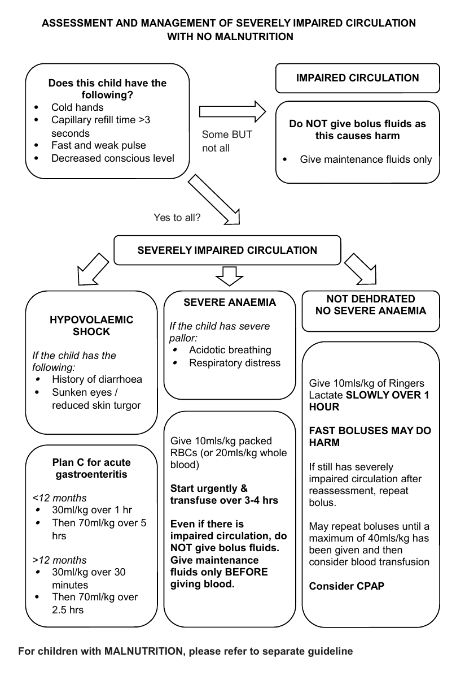

Shock is an emergency which needs to be identified and treated urgently.
A child is in shock if s/he has all three of:
|

Shock in Malnutrition
| Causes of Shock | Specific management in addition management described above. | |
|---|---|---|
| Hypovolaemic | Haemorrhage |
|
| Gastroenteritis | Once shock treated manage as per acute gastroenteritis protocol | |
| Intussusception, volvulus, peritonitis | Contact Surgeons | |
| Burns |
|
|
| Distributive | Septicaemia | IV antibiotics |
| Anaphylaxis | IM Adrenaline, See Anaphylaxis protocol | |
| Spinal Cord Injury | Contact orthopaedic surgeons | |
| Cardiogenic | Heart Failure, Cardiomyopathy, Valvular disease |
|
| Duct-dependent congenital Heart disease |
|
|
| Obstructive | Tension pneumothorax |
|
| Haemothorax | Chest drain | |
| Flail chest |
|
|
| Cardiac Tamponade | Emergency needle pericardiocentesis | |
| Dissociative | Profound Anaemia | Urgent blood transfusion |